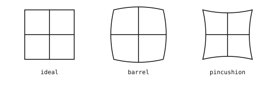
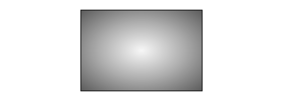
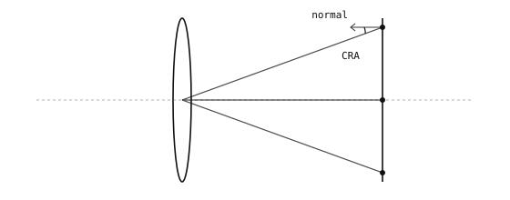

4.4. Efeitos de lentes reais¶
O modelo de lente fina e a fórmula de FOV correspondem bem às lentes reais perto do centro do quadro. Fora do centro, surgem três efeitos físicos dos quais o pipeline do sensor precisa dar conta: linhas retas na cena ficam curvas no sensor, os pixels dos cantos registram a cena mais escura do que os pixels do centro, e os raios que convergem para cada pixel chegam em um ângulo que depende de onde o pixel está situado.
4.4.1. Distorção em barril e em almofada¶
O modelo de lente fina diz que linhas retas na cena se projetam em linhas retas no sensor. As lentes reais desviam os raios fora do eixo de forma ligeiramente diferente do que o modelo prevê, e o resultado é que linhas retas na cena se curvam suavemente no sensor. A curvatura é radial – linhas que passam pelo centro do quadro permanecem retas, mas linhas deslocadas do centro arqueiam-se para fora ou para dentro.

Esquerda: um quadro ideal. Meio: a distorção em barril faz as bordas se projetarem para fora. Direita: a distorção em almofada as arqueia para dentro.¶
Na prática, surgem dois tipos de distorção:
A distorção em barril arqueia as linhas para fora, a partir do centro, como as aduelas de um barril. As distâncias focais curtas (lentes grande-angulares) são as culpadas usuais, e uma lente olho-de-peixe, no extremo, é apenas uma distorção em barril severa.
A distorção em almofada aperta as linhas para dentro, em direção ao centro, como os cordões de uma almofada de alfinetes. As distâncias focais longas (lentes teleobjetivas) tendem a produzi-la, geralmente de forma mais sutil do que o barril das grande-angulares.
O software pode corrigir a distorção depois do fato, dada uma descrição calibrada de como uma determinada lente se desvia do ideal. A correção é um remapeamento de coordenadas por pixel, da imagem distorcida de volta para onde cada raio teria pousado sem a curvatura.
4.4.2. Queda de luz nos cantos¶
Uma cena uniformemente iluminada sai mais clara no centro da imagem registrada do que nos cantos. Três efeitos geométricos se combinam de forma multiplicativa. Para um ponto da cena em um ângulo \(\theta\) em relação ao eixo óptico:
1. O canto está mais distante da lente do que o centro. Um ponto em um ângulo \(\theta\) no mesmo plano da cena fica a uma distância \(D / \cos\theta\) da lente, contra a distância \(D\) para o ponto sobre o eixo. A lei do inverso do quadrado diz que a intensidade cai com o quadrado da distância, de modo que, por si só, este efeito contribui com
– dois fatores de \(\cos\theta\).
2. A abertura da lente é vista em escorço a partir do canto. Vista do ponto fora do eixo, a superfície da abertura está inclinada por um ângulo \(\theta\) em relação à linha de visão. Sua área projetada, e portanto a quantidade de luz que ela capta, é reduzida por \(\cos\theta\).
3. O sensor recebe a luz em um ângulo. Os raios que convergem para um pixel de canto atingem o sensor em um ângulo \(\theta\) em relação à normal. O mesmo feixe de luz se espalha por uma região maior por um fator de \(1 / \cos\theta\), de modo que a intensidade por área cai por \(\cos\theta\).
Os três efeitos se multiplicam:
Esta é a queda em cos⁴. Para uma lente grande-angular cujo raio de canto forma um ângulo de 60° com o eixo óptico, \(\cos^4 60° = 0.0625\) – o canto registra cerca de 6% do brilho do centro.

Uma cena uniformemente iluminada sai clara no centro e escura nos cantos, caindo conforme \(\cos^4(\theta)\) do ângulo de canto.¶
O vinhetamento mecânico do alojamento da lente – luz cortada pela borda do barrilete da lente ou pelo encaixe – soma-se à queda geométrica e tem a mesma aparência: cantos mais escuros. Uma mitigação comum do lado da lente é escolher uma lente cujo círculo de imagem seja substancialmente maior do que a diagonal do sensor: o sensor então captura apenas a parte interna, mais bem corrigida, da imagem da lente, onde o ângulo de canto \(\theta\) é menor e o termo \(\cos^4\) é, correspondentemente, menos severo. A mesma escolha ajuda com a distorção em barril e com o ângulo do raio principal nos cantos, já que os três efeitos pioram em direção à borda do círculo de imagem. Qualquer queda que permaneça é tratada pela correção de sombreamento de lente (LSC) no próprio sensor, abordada em calibração no sensor.
4.4.3. Ângulo do raio principal¶
Um feixe de raios de um único ponto da cena converge através da lente e pousa em um único pixel do sensor. O raio central desse feixe – aquele que passa pelo centro da abertura da lente – é o raio principal. No centro do sensor (o eixo óptico), o raio principal chega perpendicular à superfície do sensor. Em pixels afastados do centro, o raio principal chega em um ângulo.

O raio principal de cada pixel converge através do centro da lente. O ângulo que ele forma com a normal do sensor é o ângulo do raio principal (CRA), zero no eixo óptico e crescendo em direção aos cantos.¶
O ângulo entre o raio principal e a normal do sensor em um dado pixel é o ângulo do raio principal, ou CRA. O CRA é zero no centro do sensor e cresce em direção aos cantos. O valor máximo depende do projeto da lente – valores comuns para pequenas câmeras de lente fixa variam de cerca de 15° a 30° nos cantos.
O CRA importa porque os pixels do sensor respondem melhor à luz que chega próxima da perpendicular à superfície do sensor. Em ângulos acentuados a resposta cai, e parte da luz pode vazar entre pixels vizinhos. Os projetos de sensor acomodam um perfil de CRA específico – emparelhar um sensor com uma lente cujo perfil difira substancialmente aparece como erros visíveis de sensibilidade e de cor nos cantos, motivo pelo qual sensores de imagem e lentes costumam ser escolhidos em conjunto.